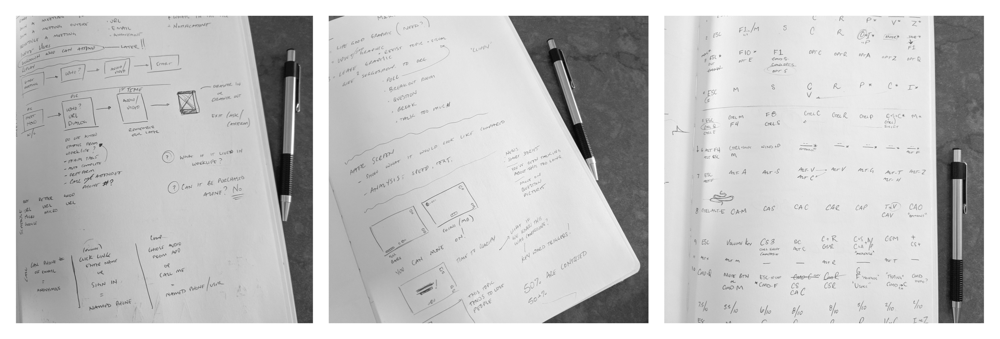

Airstack is an application that allows business owners, managers, and teams a place to collaborate and organize their apps, docs, and tools.
I am the user experience lead for meetings inside of Airstack. Born with intentions to live across multiple products at Lenovo it comes with its own requirements, release dates, and users.
I am also have been asked to lead the visual and interaction design for our mobile efforts for Airstack. Given a dev team that has been plugging away and some rough wireframes provided by another teammate, I got the challenge to give users an Android app that felt familiar and feels married to the web app.
As you might tell, collaboration has been key to the success of both pieces I have been tasked to work on.
When Airstack meetings were conceived there were more technology/business requirements then there were user requirements (not ideal but it happens). The little dev team I am on wanted to take what we had learned from creating AirClass, a virtual classroom solution (RIP), and apply it to the other products sold by Lenovo.
Our first subject was a product born to help small teams and businesses collaborate, onboard, and organize daily apps. We as a team had one major goal and that was to allow participants in as quickly as possible.
Note: My process will revolve around the Airstack meeting experience, which has been most of my time spent at Lenovo.
The first step was finding what users needed and expected in every meeting. I sketched a few ideas out on paper, and usually, this is my first step of any new idea I am working on. Then, I took a paper prototype to a small business where I sat page by page in front of approximately 10 different users.

One by one we placed a piece of paper with a quick wireframe on it in front of the user, asking what they expected each button to do and if there was anything we were missing. As usual, there are always assumptions and hypotheses on my part but finding out if those are true is gold. For instance, we had been using an icon Google had been using to exit an application. When we presented it in front of those 10 users almost all (8/10) had no idea what it meant, which is why we now show the word “Exit.”
After analyzing the data received from our onsite visit I created a more refined version. This version allowed me a little more flexibility with my testing where I could utilize our UserTesting account, email, and placing it in front of unsuspecting victims at the coffee shop. This part of the process is the meat of the process as it still goes on today. Any new feature, idea, solution to a problem will go past one or more of these types of testers.
So, what is happening now?
Sustaining? No, not really. Ideating on the product has been our focus. Not that it was intentional but has happened because of the time we spend with our users and understanding their pain points. Slowly, Airstack has been getting in the hands of some of our external beta users, we have been dogfooding our product, and getting a lot of internal insight. Along with that, I have reached out to a handful of users, primarily meeting tool users, and finding their frustrations and even habits.
For instance, most people who present on a meeting tool ask the same question every time
Can you see my screen?
I wondered, what if we removed that question from a users mind and just let them know. What if we told the user that someone is, in fact, seeing their screen. What if we found ways to remedy those who don’t. Let's be honest the presenter is not going to know why John from accounting can’t see his screen because it usually is a network, computer, or a user problem.

Along with ideating, we are finessing the product, as I like to call it. We get to see day in and day out the little issues that show up or that were not right. We learn from our mistakes and make it better. Because the dev and UX teams are so intertwined we get to experiment together and make small changes and see what happens together.